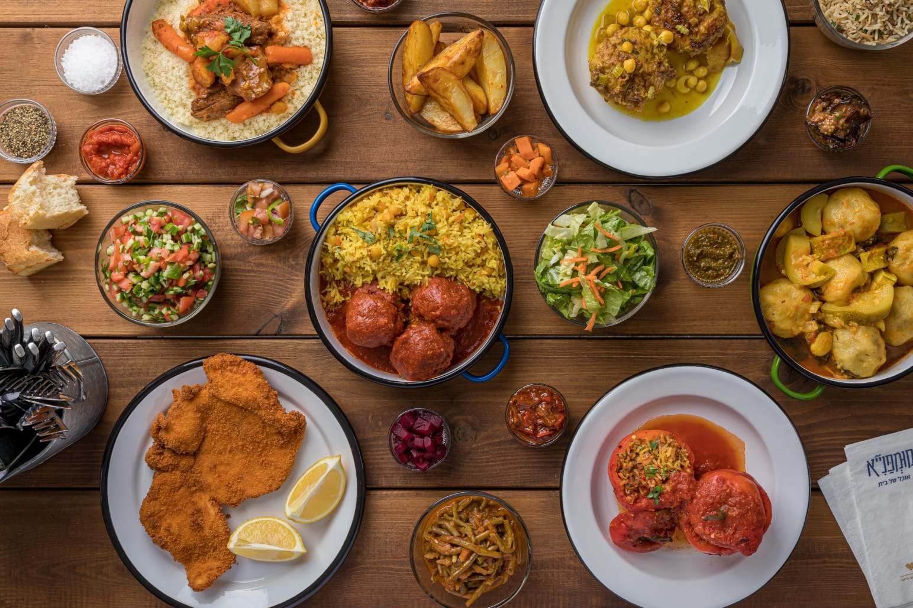

לאכול במסעדה בביטחון
מצאו מנות שמתאימות בדיוק לצרכים שלכם.
Picky עוזרת לכם למצוא מנות במסעדות לפי אלרגיות, רגישויות והעדפות תזונתיות. כך תוכלו לבחור מנה בצורה פשוטה, רגועה וברורה יותר.
יוצרים פרופיל
מגדירים רגישויות, אלרגיות והעדפות אישיות.
בוחרים מסעדה
המערכת מציגה מסעדות שמתאימות לפרופיל שלכם.
מקבלים תפריט אישי
רואים מנות שמתאימות לכם או דורשות התאמה קטנה.
